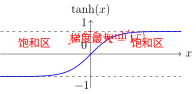
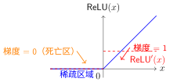
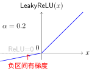
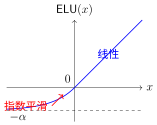
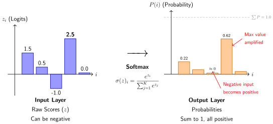
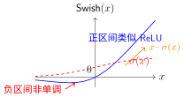

激活函数#
基本概念#
激活函数（Activation Function）是神经网络中的非线性变换函数，它决定了神经元是否被激活以及激活的程度。激活函数引入了非线性因素，使得神经网络能够学习和表示复杂模式。
从生物神经元的角度理解，激活函数模拟了生物神经元中"动作电位"的触发机制——当输入信号超过某个阈值时，神经元被激活并产生输出信号。人工神经网络中的激活函数正是这一生物学原理的数学抽象。
神经网络如果没有激活函数，无论堆叠多少层，都只能学习线性变换。这是因为多个线性变换的组合仍然是一个线性变换：
激活函数通过引入非线性，使得神经网络能够逼近任意复杂的函数（根据通用近似定理），这是深度学习能够处理图像、语音、自然语言等复杂任务的基础。
激活函数的核心作用
引入非线性：使神经网络能够逼近任意复杂函数，这是深度学习强大表达能力的根本来源
决定输出范围：控制神经元输出的数值范围，影响后续层的输入分布
影响梯度流动：反向传播中梯度的计算和流动直接由激活函数的导数决定
稀疏激活：某些激活函数（如ReLU）可以产生稀疏激活，提高计算效率和特征选择性
特征映射：将输入空间映射到新的特征空间，帮助网络提取有用特征
常见激活函数#
1. Sigmoid函数#
历史背景与设计动机
Sigmoid函数（又称Logistic函数）是最早被广泛使用的激活函数之一，其历史可以追溯到19世纪的逻辑回归模型。设计之初，Sigmoid函数的目的是：
概率建模：将任意实数映射到(0,1)区间，自然地解释为概率值，这在二分类问题中尤为重要
平滑阈值：提供一个连续可微的近似来模拟生物神经元的"全或无"发放机制
梯度传递：在当时计算资源有限的背景下，其导数计算简单，便于反向传播
数学定义与推导
Sigmoid函数的数学表达式为：
这个函数可以从统计学中的Logistic分布导出，其累积分布函数（CDF）正是Sigmoid函数。Logistic分布的CDF为：
当位置参数\(\mu=0\)、尺度参数\(s=1\)时，即得到标准的Sigmoid函数。
导数特性与数学之美
Sigmoid函数的导数具有优雅的形式：
这个性质意味着在反向传播时，只需要知道前向传播的输出值\(\sigma(x)\)，就可以直接计算梯度，无需额外的指数运算，大大提高了计算效率。
设计目标的实现
概率解释：输出值域(0,1)使得\(\sigma(x)\)可以解释为"激活的概率"，在二分类问题中，\(P(y=1|x) = \sigma(w^Tx + b)\)
非线性转换：将\((-\infty, +\infty)\)的输入压缩到(0,1)的输出，引入非线性变换
单调性：函数是单调递增的，保持了输入的序关系，便于优化
优点与局限性
优点：
输出范围(0,1)，可解释为概率，这在二分类的输出层仍然广泛使用
函数平滑可导，处处可微，适合梯度下降优化
导数形式简单，计算效率高
历史上解决了神经网络从线性到非线性的关键转变
局限性：
梯度消失问题：当\(|x|\)较大时，\(\sigma'(x) \approx 0\)，导致深层网络的梯度几乎无法传递到前层
非零中心输出：输出始终为正，导致后续层的输入分布偏置，可能减缓收敛速度
计算成本：相对于后来的ReLU，需要计算指数函数
PyTorch实现：
1import torch.nn as nn
2
3sigmoid = nn.Sigmoid()
4output = sigmoid(input) # input: [batch_size, features]
可视化：
饱和区间的直观理解：当输入\(x\)远离原点时，Sigmoid函数进入饱和区间（输出接近0或1），此时无论输入如何变化，输出几乎不变，导致梯度接近零。这是Sigmoid函数导致梯度消失的根本原因。
2. Tanh函数（双曲正切）#
历史背景与设计动机
双曲正切函数（Hyperbolic Tangent，Tanh）可以看作是Sigmoid函数的"零中心"版本。设计Tanh的主要动机是解决Sigmoid函数的两个根本问题：
零中心化：Sigmoid的输出范围是(0,1)，始终为正；Tanh将其扩展到(-1,1)，使得输出可以是负数
更强的梯度：在零点附近，Tanh的导数最大值是1（\(\tanh'(0) = 1\)），而Sigmoid的导数最大值只有0.25（\(\sigma'(0) = 0.25\)）
对称性：Tanh是奇函数（\(\tanh(-x) = -\tanh(x)\)），保持了输入的对称性质
Tanh函数与Sigmoid函数之间存在简洁的数学关系，这反映了它们设计理念的连贯性：
这个关系表明，Tanh可以看作是将Sigmoid函数先缩放2倍，再平移-1，从而将输出中心移到零点。
数学定义与推导
Tanh函数的数学表达式为：
其中\(\sinh(x) = \frac{e^x - e^{-x}}{2}\)是双曲正弦，\(\cosh(x) = \frac{e^x + e^{-x}}{2}\)是双曲余弦。
导数特性
Tanh函数的导数为：
与Sigmoid类似，导数可以用函数值本身来表示，但值得注意的是，Tanh的导数在\(|x| < 1\)时较大，最大值1出现在\(x=0\)处。
设计目标的实现
零中心输出：输出范围(-1,1)是关于原点对称的，这使得后续层的输入分布更加平衡，有助于梯度流动
更强的梯度信号：在零点附近，Tanh的导数接近1，比Sigmoid的0.25大得多，这意味着更陡峭的梯度信号
归一化效果：无论输入多大，输出始终被限制在(-1,1)范围内，具有一定的归一化效果
优点与局限性
优点：
输出范围(-1,1)，零中心，有助于优化过程的收敛
在零点附近梯度更强，训练初期收敛更快
导数计算简单，只需函数值
是奇函数，保持了输入的对称性
局限性：
仍然存在梯度消失问题，当\(|x|\)较大时梯度接近0
计算复杂度与Sigmoid相当，比ReLU高
在循环神经网络中，Tanh仍然可能导致梯度消失
与Sigmoid的比较
特性 |
Sigmoid |
Tanh |
|---|---|---|
输出范围 |
(0,1) |
(-1,1) |
零中心 |
否 |
是 |
导数最大值 |
0.25 |
1 |
对称性 |
非对称 |
奇函数 |
常用位置 |
输出层（二分类） |
隐藏层、RNN |
PyTorch实现：
1tanh = nn.Tanh()
2output = tanh(input)
可视化：

直观理解：Tanh函数可以看作是将Sigmoid函数"拉伸"并"平移"到以原点为中心的位置。这不仅解决了输出非零中心的问题，还使得函数在原点附近更加"陡峭"，从而在训练初期能够传递更强的梯度信号。
3. ReLU函数（Rectified Linear Unit）#
历史背景与设计动机
ReLU（Rectified Linear Unit，整流线性单元）于2010年由Xavier Glorot等人提出，并在2012年AlexNet的成功中发挥了关键作用。ReLU的设计动机直接针对Sigmoid和Tanh的根本缺陷：
梯度消失问题的终结：Sigmoid和Tanh在\(|x|\)较大时梯度接近0，而ReLU在正区间梯度恒为1，从根本上解决了深层网络的梯度消失问题
计算效率：ReLU只需要一个简单的max操作，没有任何指数运算，计算速度比Sigmoid/Tanh快得多
稀疏激活：ReLU在负区间输出为0，这自然地产生了稀疏表示（大约50%的神经元在任意时刻是"关闭"的）
生物学合理性：研究表明生物神经元也具有类似的"整流"特性
ReLU的设计哲学是"简单而有效"——通过最少的计算开销获得最大的性能提升。
数学定义与推导
ReLU函数的数学表达式为： $\( \text{ReLU}(x) = \max(0, x) = \begin{cases} x & \text{if } x > 0 \\ 0 & \text{otherwise} \end{cases} \)$
这个函数可以看作是"半波整流"——只保留正半轴的信号，将负半轴的信号"整流"为零。
导数特性
ReLU函数的导数为：
在\(x=0\)处，ReLU的次梯度（subgradient）是[0,1]区间的任意值，通常实践中取0或1。
设计目标的实现
梯度传递：对于正输入，梯度恒为1，可以无损地传递到前层；对于负输入，梯度为0
稀疏性：当输入为负时，神经元完全"关闭"，产生稀疏激活
计算简单：只有比较操作，没有任何非线性运算（指数、对数等）
优点与局限性
优点：
彻底解决梯度消失：在正区间梯度恒为1，深度网络可以正常训练
计算极其高效：只有简单的max和乘法操作，比Sigmoid快6-10倍
稀疏表示：自然产生约50%的稀疏激活，有助于特征选择和泛化
收敛速度快：由于强梯度信号，训练收敛速度比Sigmoid/Tanh快得多
局限性：
"死亡神经元"问题：如果某神经元的输入始终为负，其梯度永远为0，该神经元永久"死亡"
非零中心输出：输出范围[0,∞)，仍然存在输出偏置问题
无界输出：输出可以无限增大，可能导致数值不稳定
不可导：在x=0处不可导，需要用次梯度处理
"死亡神经元"的深入分析
"死亡神经元"是ReLU的一个独特问题。假设一个神经元的输出为\(a = \text{ReLU}(Wx + b)\)，其梯度为：
如果\(Wx + b\)在训练过程中始终小于等于0，则\(\mathbf{1}_{\{Wx + b > 0\}} = 0\)，梯度为0，权重\(W\)和偏置\(b\)永远不会更新，神经元永久死亡。
死亡神经元通常发生在以下情况：
学习率过大，导致权重更新跳过了正区间
初始化不当，初始权重使大多数输入为负
梯度累积，使权重移入负区间
PyTorch实现：
1relu = nn.ReLU()
2output = relu(input)
3
4# 也可以使用 inplace 模式节省内存（但可能影响梯度计算）
5relu_inplace = nn.ReLU(inplace=True)
可视化：

直观理解：ReLU的图像是一个"斜坡"（ramp）函数，正区间是斜率为1的直线，负区间是值为0的水平线。这个简单的几何形状蕴含着深刻的洞察：神经元应该"选择性地"响应——对正信号做出线性响应，对负信号完全不响应。
4. Leaky ReLU#
历史背景与设计动机
Leaky ReLU是ReLU最成功的变体之一，由He等人于2015年提出。其设计动机直接针对ReLU的"死亡神经元"问题：
解决死亡神经元：通过给负区间一个小的非零斜率，确保即使输入为负，神经元也能获得梯度并"复活"
保持稀疏性：虽然负区间有梯度，但幅度很小，主要的稀疏性仍然保留
零中心化改进：负输出使得整体输出分布更接近零中心
无额外超参数负担：负斜率是一个简单的小常数，不需要复杂的调参
Leaky ReLU的设计哲学是"在保持ReLU优点的同时，修复其主要缺陷"。
数学定义与推导
Leaky ReLU函数的数学表达式为：
其中\(\alpha\)是一个小的正数，通常取0.01，因此得名"Leaky"（泄漏）。
导数特性
Leaky ReLU函数的导数为：
设计目标的实现
负区间梯度：即使输入为负，也有非零梯度\(\alpha\)，防止神经元永久死亡
稀疏性保留：负斜率很小，负输出相对正输出仍然很小，主要激活仍然是稀疏的
零中心化：负输出使分布更平衡，有助于收敛
关于\(\alpha\)的选择
\(\alpha\)的选择是一个经验性问题：
\(\alpha = 0.01\)：最常用的值，源于对ReLU死亡问题的保守估计
\(\alpha = 0.1\)或\(\alpha = 0.2\)：在某些任务上表现更好
\(\alpha = 0\)：退化为ReLU
\(\alpha\)可学习：将\(\alpha\)作为可学习参数，让网络自动学习最优斜率（Parametric ReLU, PReLU）
优点与局限性
优点：
彻底解决"死亡神经元"问题
保持ReLU的计算效率
改善输出分布的零中心性
在大多数任务上与ReLU表现相当或更好
局限性：
引入了超参数\(\alpha\)需要调优
负区间有梯度，可能降低稀疏性
对于某些任务（如音频处理），负输出可能不符合直觉
参数化ReLU（PReLU）
PReLU将\(\alpha\)作为可学习参数：
其中\(\alpha_i\)是每个通道独立的可学习参数。
PyTorch实现：
1# 标准Leaky ReLU
2leaky_relu = nn.LeakyReLU(negative_slope=0.01)
3output = leaky_relu(input)
4
5# PReLU（可学习参数）
6prelu = nn.PReLU() # 默认negative_slope=0.25，可学习
7output = prelu(input)
8
9# 带参数的PReLU
10prelu = nn.PReLU(init=0.2) # 初始化斜率为0.2
可视化：

直观理解：Leaky ReLU给负输入一个"泄漏"通道——即使信号是负的，也能"泄漏"出一点梯度，保持神经元的"生命力"。这就像给一个可能干涸的水渠开一个小的旁路，确保即使在最坏的情况下也有水流通过。
5. ELU函数（Exponential Linear Unit）#
历史背景与设计动机
ELU（Exponential Linear Unit，指数线性单元）由Clevert等人于2015年提出。与Leaky ReLU不同，ELU在负区间使用指数函数而非线性函数，其设计动机更为精细：
均值零激活：通过平滑的负输出，使激活的均值接近零，加速收敛
负值的鲁棒性：指数函数对负输入有更"柔和"的响应，对噪声更鲁棒
更快的收敛：实验表明ELU在某些任务上比ReLU收敛更快
有界的负输出：负输出有下界（当\(x \to -\infty\)时，\(\text{ELU}(x) \to -\alpha\)），避免无界问题
ELU的设计哲学是"通过数学上的精细设计，获得更好的训练动态"。
数学定义与推导
ELU函数的数学表达式为：
其中\(\alpha\)是超参数（通常取1.0）。当\(x \to -\infty\)时，\(\text{ELU}(x) \to -\alpha\)，是有界的。
导数特性
ELU函数的导数为：
有趣的是，ELU的导数在负区间也依赖于函数值本身，这使得梯度在负区间能够根据输入的"负程度"自适应调整。
设计目标的实现
均值零激活：负输出的平滑性使得激活均值接近零，这改善了梯度流动
有界性：负输出有下界\((-\alpha, 0)\)，避免了数值无界的问题
平滑性：负区间使用指数函数，是\(C^\infty\)光滑的，比Leaky ReLU更平滑
关于\(\alpha\)的选择
\(\alpha = 1.0\)：最常用的默认值
\(\alpha\)越大：负输出范围越大，均值零中心效果越明显
\(\alpha\)越小：越接近ReLU
ELU vs Leaky ReLU
特性 |
ELU |
Leaky ReLU |
|---|---|---|
负区间函数 |
指数函数 |
线性函数 |
平滑性 |
\(C^\infty\)光滑 |
仅连续 |
有界性 |
有界\((-\alpha, \infty)\) |
无界\((-\infty, \infty)\) |
计算复杂度 |
需要指数运算 |
仅乘法 |
收敛速度 |
通常更快 |
与ReLU相当 |
优点与局限性
优点：
输出均值接近零，加速收敛
负区间平滑，对噪声更鲁棒
有界负输出，数值更稳定
在某些任务上收敛更快
局限性：
计算比ReLU复杂（需要计算指数）
推理延迟略高
\(\alpha\)需要调参
SELU（Scaled ELU）
SELU是ELU的缩放版本，专门设计用于自归一化神经网络（SNN）：
其中\(\lambda \approx 1.0507\)，\(\alpha \approx 1.6733\)。
SELU的设计使得在特定初始化和网络结构下，激活值能够自动归一化到零均值、单位方差。
PyTorch实现：
1# 标准ELU
2elu = nn.ELU(alpha=1.0)
3output = elu(input)
4
5# SELU
6selu = nn.SELU() # 使用默认的alpha和lambda
7output = selu(input)
可视化：

直观理解：ELU在正区间保持线性（与ReLU相同），在负区间使用指数曲线。这意味着负信号被"柔和地"压缩，而不是被硬切断。这种平滑性使得负值也能携带信息，同时保持均值的稳定。
6. Softmax函数#
历史背景与设计动机
Softmax函数是处理多分类问题的标准输出层激活函数。其设计动机源于概率论的基本原理：
概率分布建模：多分类问题需要输出一个概率分布，表示每个类别的"置信度"
归一化要求：概率分布必须满足所有概率之和为1
竞争机制：类别之间应该是"竞争"的，一个类别的概率增加意味着其他类别概率降低
温度控制：Softmax允许通过温度参数调节输出的"锐利度"
Softmax的独特之处在于它不是逐元素操作的，而是对整个向量进行归一化处理。
数学定义与推导
对于\(C\)个类别的分类问题，Softmax函数定义为：
其中\(x_i\)是第\(i\)个类别的"得分"（logit）。
Softmax的数学性质
归一化：\(\sum_{i=1}^C \text{softmax}(x_i) = 1\)
非负性：\(\text{softmax}(x_i) > 0\) for all \(i\)
单调性：如果\(x_i > x_j\)，则\(\text{softmax}(x_i) > \text{softmax}(x_j)\)
平移不变性：\(\text{softmax}(x + c) = \text{softmax}(x)\) for any constant\(c\)，这个性质使得Softmax对logit的平移不敏感
导数特性（重要！）
Softmax的导数比较特殊，因为它是一个向量函数。其雅可比矩阵为：
这个形式表明：
对角元素（\(i=j\)）是正的，梯度会增强该类别的概率
非对角元素（\(i \neq j\)）是负的，梯度会减小其他类别的概率
与交叉熵损失的结合
Softmax通常与交叉熵损失（Cross-Entropy Loss）配合使用：
其中\(y_i\)是真实标签的one-hot编码。
Softmax + 交叉熵的梯度有一个简洁的形式：
这个性质使得梯度计算非常高效，不需要分别计算Softmax和交叉熵的梯度。
设计目标的实现
概率解释：输出在(0,1)之间且和为1，可以直接解释为概率分布
归一化：通过分母的求和实现全局归一化
竞争机制：指数函数放大差异，让大的得分更大、小的得分更小
温度参数
Softmax可以引入温度参数\(T\)来控制输出的"锐利度"：
\(T \to 0\)：趋近于"硬"最大值（one-hot）
\(T = 1\)：标准Softmax
\(T \to \infty\)：趋近于均匀分布
温度参数在知识蒸馏、模型校准等场景中很有用。
数值稳定性
Softmax的一个主要问题是数值稳定性。当\(z_i\)很大时，\(e^{z_i}\)会溢出；当\(z_i\)很负时，\(e^{z_i}\)会下溢到0。
解决方案是使用"log-sum-exp"技巧：
其中\(M = \max(x_1, ..., x_C)\)是最大值。
或者直接使用log-Softmax：
其中LSE是对数求和指数函数。
优点与局限性
优点：
输出为有效的概率分布
与交叉熵损失配合完美
梯度形式简洁高效
支持温度控制调节
局限性：
对输入数值范围敏感（需要数值稳定技巧）
输出不是稀疏的（所有类别都有非零概率）
类别之间存在依赖关系，不适合独立预测
PyTorch实现：
1import torch.nn as nn
2
3# 标准Softmax
4softmax = nn.Softmax(dim=1) # dim指定计算softmax的维度
5output = softmax(input)
6
7# Log-Softmax（数值更稳定）
8log_softmax = nn.LogSoftmax(dim=1)
9output = log_softmax(input)
10
11# 带温度的Softmax（手动实现）
12temperature = 2.0
13output = torch.softmax(input / temperature, dim=-1)
可视化：

Softmax vs Sigmoid
在二分类问题中，Softmax可以简化为Sigmoid：
因此，二分类问题中Sigmoid和Softmax是等价的。但对于多分类（>2），必须使用Softmax。
直观理解：Softmax本质上是一个"软化"的竞争机制。它让所有的候选者都有"获胜"的可能，但得分高的候选者概率更大，得分低的候选者概率更小。这就像民主选举——每个候选人都得到一些"选票"，但得票多的候选人最终获胜。
7. Swish函数#
历史背景与设计动机
Swish函数由Google Brain团队的Prajit Ramachandran等人于2017年通过神经架构搜索发现。其设计动机体现了深度学习研究的新趋势——通过自动化方法发现新的激活函数：
自门控机制：Swish将输入\(x\)作为"门"，将\(\sigma(\beta x)\)作为"门控信号"，实现\(x\)与\(\sigma(\beta x)\)的逐元素相乘
平滑非单调：与ReLU不同，Swish是非单调的，在负区间有小的负值
可学习参数：\(\beta\)可以设置为可学习的参数，让网络自动调整门控强度
实验验证：通过大规模实验验证，Swish在多个任务上优于ReLU
Swish的发现标志着激活函数设计从"人工设计"转向"自动搜索"的新范式。
数学定义与推导
Swish函数的数学表达式为：
其中\(\beta\)是可选的可学习参数（通常取1.0）。
与ReLU的关系
当\(\beta \to \infty\)时，\(\sigma(\beta x) \to \text{step}(x)\)，Swish趋近于ReLU：
当\(\beta = 0\)时，\(\sigma(\beta x) = 0.5\)，Swish变为线性的缩放：
导数特性
Swish函数的导数为：
这个导数形式比较复杂，但保证了梯度始终存在（没有"死区"）。
设计目标的实现
自门控：\(x \cdot \sigma(\beta x)\)的结构让输入\(x\)自己控制自己的激活程度
非单调性：在负区间有小的负输出，可能保留一些负信息
平滑性：处处可导，优化更加稳定
\(\beta\)的选择
\(\beta = 1\)（固定）：默认设置，在大多数任务上表现良好
\(\beta\)可学习：让网络自动学习最优的\(\beta\)值
\(\beta > 1\)：门控更"尖锐"，更接近ReLU
\(0 < \beta < 1\)：门控更"平缓"，更接近线性
SiLU（Sigmoid Linear Unit）
SiLU（有时也称为Swish-1）是Swish的特殊情况，即\(\beta = 1\)：
SiLU是Swish的流行变体，在PyTorch中实现为nn.SiLU()。
优点与局限性
优点：
平滑、非单调，在某些任务上优于ReLU
可学习参数提供灵活性
没有"死亡神经元"问题
导数处处存在，优化更稳定
局限性：
计算成本较高（需要计算Sigmoid）
实际增益在某些任务上可能不明显
超参数\(\beta\)需要调优
PyTorch实现：
1# 固定beta的Swish
2class Swish(nn.Module):
3 def __init__(self, beta=1.0):
4 super().__init__()
5 self.beta = beta
6
7 def forward(self, x):
8 return x * torch.sigmoid(self.beta * x)
9
10swish = Swish(beta=1.0)
11output = swish(input)
12
13# SiLU（beta=1.0的Swish）
14silu = nn.SiLU()
15output = silu(input)
16
17# 可学习参数的Swish
18class LearnableSwish(nn.Module):
19 def __init__(self):
20 super().__init__()
21 self.beta = nn.Parameter(torch.tensor(1.0))
22
23 def forward(self, x):
24 return x * torch.sigmoid(self.beta * x)
可视化：

直观理解：Swish的自门控机制可以理解为"信息选择"——\(\sigma(\beta x)\)决定了\(x\)中有多少信息应该被"传递"出去。当\(x\)为正且较大时，\(\sigma(\beta x)\)接近1，大部分信息被保留；当\(x\)为负时，\(\sigma(\beta x)\)接近0，负信息被抑制但不会完全消失。这种"软门控"比ReLU的"硬切断"更加精细。
激活函数比较#
选择合适的激活函数需要权衡多个因素，包括梯度流动特性、计算效率、任务类型等。
激活函数 |
输出范围 |
是否零中心 |
梯度消失风险 |
计算复杂度 |
典型应用 |
|---|---|---|---|---|---|
Sigmoid |
(0,1) |
否 |
高 |
中 |
二分类输出 |
Tanh |
(-1,1) |
是 |
中 |
中 |
RNN隐藏层 |
ReLU |
[0,∞) |
否 |
低 |
低 |
CNN默认 |
Leaky ReLU |
(-∞,∞) |
否 |
低 |
低 |
替代ReLU |
ELU |
(-α,∞) |
近似是 |
低 |
中 |
追求收敛速度 |
Softmax |
(0,1) |
否 |
中 |
高 |
多分类输出 |
Swish |
(-0.28,∞) |
否 |
低 |
中 |
现代网络 |
关键指标解读
梯度消失风险：评估激活函数在深度网络中导致梯度消失的可能性。Sigmoid和Tanh在\(|x|\)较大时梯度接近0，风险较高；ReLU及其变体风险较低。
计算复杂度：考虑前向传播和反向传播的计算开销。ReLU只有比较操作，复杂度最低；Softmax需要对整个向量归一化，复杂度最高。
零中心性：输出的均值是否接近零。零中心输出有助于梯度流动和收敛速度。Tanh是严格的零中心；ReLU的输出均值大于0。
梯度流动对比
激活函数 |
正区间梯度 |
负区间梯度 |
饱和区间 |
|---|---|---|---|
Sigmoid |
较小（≤0.25） |
极小（≤0.25） |
大部分区域 |
Tanh |
较大（≤1） |
极小（≤0.25） |
$ |
ReLU |
恒为1 |
0 |
无（正区间） |
Leaky ReLU |
恒为1 |
\(\alpha\)（小常数） |
无 |
ELU |
恒为1 |
\(\alpha + \text{ELU}(x)\) |
无（平滑过渡） |
Swish |
变化 |
变化 |
无（非单调） |
激活函数的选择原则#
选择激活函数是深度学习模型设计中的关键决策，需要综合考虑网络深度、任务类型、计算资源等因素。以下是系统化的选择框架：
1. 隐藏层激活函数#
隐藏层激活函数的选择直接影响网络的表达能力和训练动态。
默认选择：ReLU及其变体
对于大多数深度学习任务，ReLU是隐藏层的默认选择：
计算效率最高
在正区间梯度恒为1，有效避免梯度消失
产生稀疏激活，有助于特征选择
遇到"死亡神经元"时
如果观察到大量神经元梯度为0（通过监控梯度分布），尝试：
Leaky ReLU：给负区间小的斜率（如0.01或0.1）
ELU：使用平滑的负值，但计算成本略高
PReLU：让网络自动学习最优的负斜率
深层网络（>50层）
对于非常深的网络，ReLU可能仍然存在问题：
Swish：Google提出的平滑激活函数，在深层网络上表现优秀
Mish：类似于Swish的平滑激活函数，数学形式为\(\text{mish}(x) = x \cdot \tanh(\text{softplus}(x))\)
SELU：专为自归一化设计，适合很深的全连接网络
循环神经网络（RNN）
RNN有独特的梯度流动问题：
Tanh：RNN的经典选择，对长序列有较好的梯度保持
Sigmoid：用于门控机制（如LSTM的门）
Hard Tanh：计算更高效的Tanh近似
2. 输出层激活函数#
输出层激活函数需要与损失函数配合，直接影响模型的预测格式。
二分类问题
使用Sigmoid激活函数，输出表示"正类的概率"：
配合二元交叉熵损失（Binary Cross-Entropy）：
多分类问题
使用Softmax激活函数，输出表示"各类别的概率分布"：
配合分类交叉熵损失（Categorical Cross-Entropy）：
多标签分类
当每个样本可以属于多个类别时，使用Sigmoid（独立预测每个类别）：
配合二元交叉熵损失。
回归问题
通常不使用激活函数（或使用线性激活）：
如果输出有特定范围（如[0,1]），可以：
使用Sigmoid并缩放输出：\(\hat{y} = \sigma(w^Tx + b)\)
使用截断的ReLU：\(\hat{y} = \max(0, \min(1, w^Tx + b))\)
3. 特殊考虑#
梯度流动问题
避免在深层网络中使用Sigmoid/Tanh作为隐藏层激活
如果必须使用，尝试残差连接（Residual Connection）
使用BatchNorm可以缓解部分梯度问题
计算资源受限
优先选择ReLU（计算最简单）
避免使用Softmax（需要指数运算）
考虑量化感知训练
稀疏性要求
ReLU天然产生稀疏激活（约50%）
需要更强的稀疏性时，使用正则化（如L1正则）
Elastic Net结合L1和L2正则化
实时系统要求
ReLU延迟最低（单一比较操作）
Leaky ReLU几乎无额外开销
避免使用Swish、ELU等需要指数运算的激活函数
4. 激活函数选择决策树#
5. 实验建议#
在实践中，建议：
基准测试：首先使用ReLU建立基准
对比实验：尝试2-3种替代激活函数
监控指标：观察训练损失、验证准确率、梯度分布
消融研究：系统地比较不同激活函数的效果
任务适配：根据具体任务特点选择最合适的激活函数
激活函数的梯度分析#
理解激活函数的梯度特性对于设计高效训练的神经网络至关重要。梯度消失和梯度爆炸是深度学习中最核心的训练挑战之一。
1. 梯度消失问题#
问题本质
在反向传播过程中，梯度需要从输出层逐层传回输入层。如果每一层的梯度都小于1，梯度会指数级衰减，导致前几层的权重几乎无法更新，这就是梯度消失。
对于\(n\)层的线性网络，假设每层的增益为\(g_i\)（激活函数导数的某种度量），则：
如果所有\(g_i < 1\)，则\(\frac{\partial L}{\partial x_1}\)会指数级衰减。
各激活函数的梯度消失风险
激活函数 |
正区间导数 |
负区间导数 |
饱和区间 |
|---|---|---|---|
Sigmoid |
0-0.25 |
0-0.25 |
大部分 |
Tanh |
0-1 |
0-0.25 |
\(|x| > 2\)时 |
ReLU |
1 |
0 |
无 |
Leaky ReLU |
1 |
\(\alpha > 0\) |
无 |
ELU |
1 |
\(\alpha + \text{ELU}(x)\) |
无 |
Sigmoid的梯度消失分析
Sigmoid函数的导数为\(\sigma'(x) = \sigma(x)(1 - \sigma(x))\)，最大值在\(x=0\)处为0.25。当\(x\)远离0时：
如果\(x = 5\)，\(\sigma'(5) \approx 0.0066\)
如果\(x = 10\)，\(\sigma'(10) \approx 0.000045\)
对于10层使用Sigmoid的网络，梯度会衰减约\(0.25^{10} \approx 10^{-6}\)，几乎无法学习。
ReLU如何缓解梯度消失
ReLU在正区间的导数恒为1，这意味着梯度可以无损地传递到前层。理论上，ReLU网络可以训练任意深度的网络（只要正区间有足够的信号）。
Leaky ReLU的改进
Leaky ReLU在负区间也有非零梯度\(\alpha\)，确保即使输入为负，神经元也能获得梯度更新。这从根本上解决了"死亡神经元"问题。
2. 梯度爆炸问题#
问题本质
与梯度消失相反，如果每层的梯度都大于1，梯度会指数级增长，导致权重更新过大，模型无法收敛。
解决方案
梯度裁剪（Gradient Clipping）：限制梯度的最大范数
梯度裁剪的PyTorch实现#1torch.nn.utils.clip_grad_norm_(model.parameters(), max_norm=1.0)
合理的权重初始化：确保各层激活值和梯度的方差稳定
Xavier初始化：适用于Sigmoid/Tanh
He初始化：适用于ReLU
使用ReLU：ReLU的梯度有上界（1），不会无限增长
3. 梯度流动可视化#
反向传播中的梯度流动
输出层 ←─── 梯度流动方向 ──── 输入层
Sigmoid: ████████████░░░░░░░ （大部分梯度消失）
Tanh: ██████████████░░░░░ （部分梯度消失）
ReLU: ███████████████████ （梯度良好传递）
LeakyReLU: ███████████████████ （梯度良好传递）
ELU: ███████████████████ （梯度良好传递）
4. 梯度检查实践#
1def check_activation_gradients(model, input_data):
2 """检查激活函数的梯度"""
3 model.zero_grad()
4 output = model(input_data)
5 loss = output.sum()
6 loss.backward()
7
8 gradient_stats = {}
9 for name, param in model.named_parameters():
10 if param.grad is not None:
11 grad = param.grad.abs()
12 gradient_stats[name] = {
13 'mean': grad.mean().item(),
14 'std': grad.std().item(),
15 'max': grad.max().item(),
16 'min': grad.min().item(),
17 'zero_ratio': (grad == 0).sum().item() / grad.numel()
18 }
19
20 return gradient_stats
21
22# 使用示例
23stats = check_activation_gradients(model, input_tensor)
24for name, stat in stats.items():
25 if 'weight' in name and 'layer1' in name:
26 print(f"{name}: mean={stat['mean']:.6f}, zero_ratio={stat['zero_ratio']:.2%}")
激活函数的初始化配合#
神经网络的权重初始化对训练过程的收敛速度和最终性能有重要影响。不恰当的初始化可能导致梯度消失或爆炸，使得网络难以训练。不同的激活函数具有不同的非线性特性，因此需要匹配的初始化策略来保持前向传播中信号的方差和反向传播中梯度的稳定性。
Xavier初始化#
Xavier初始化（也称为Glorot初始化）由Xavier Glorot和Yoshua Bengio提出，旨在保持前向传播中信号的方差和反向传播中梯度的方差大致相同，从而避免梯度消失或爆炸。
数学原理： 对于线性层 \(y = Wx + b\)，假设输入 \(x\) 和权重 \(W\) 独立且均值为零，Xavier初始化设定权重的方差为：
其中 \(n_{\text{in}}\) 是输入神经元数，\(n_{\text{out}}\) 是输出神经元数。对于均匀分布，权重从 \([-\sqrt{\frac{6}{n_{\text{in}}+n_{\text{out}}}}, \sqrt{\frac{6}{n_{\text{in}}+n_{\text{out}}}}]\) 中采样；对于正态分布，标准差为 \(\sqrt{\frac{2}{n_{\text{in}}+n_{\text{out}}}}\)。
特点：
适用于S型激活函数（Sigmoid、Tanh），因为这些函数在零点附近近似线性，且梯度在零点最大。
能够保持各层激活值的方差稳定，避免梯度消失。
假设激活函数关于零点对称且梯度在零点附近接近1（Tanh满足，Sigmoid不严格满足但实践中可用）。
流程：
计算当前层的输入维度 \(n_{\text{in}}\) 和输出维度 \(n_{\text{out}}\)。
根据公式计算方差或标准差。
从相应分布中采样权重。
偏置初始化为零。
PyTorch实现：
1def xavier_init(m):
2 if isinstance(m, nn.Linear):
3 nn.init.xavier_normal_(m.weight)
4 if m.bias is not None:
5 nn.init.zeros_(m.bias)
6
7model.apply(xavier_init)
He初始化#
He初始化（也称为Kaiming初始化）由何恺明等人提出，专门为ReLU及其变体设计。由于ReLU在负区间输出为零，其非线性特性与S型激活函数不同，Xavier初始化的方差假设不再适用。He初始化通过调整权重方差来补偿ReLU的"半波整流"效应，确保信号在前向和反向传播中保持稳定的方差。
数学原理： 对于线性层 \(y = Wx + b\)，假设输入 \(x\) 和权重 \(W\) 独立且均值为零，且激活函数为ReLU（仅正区间有梯度）。He初始化设定权重的方差为：
其中 \(n_{\text{in}}\) 是输入神经元数（fan_in模式）。对于均匀分布，权重从 \([-\sqrt{\frac{6}{n_{\text{in}}}}, \sqrt{\frac{6}{n_{\text{in}}}}]\) 中采样；对于正态分布，标准差为 \(\sqrt{\frac{2}{n_{\text{in}}}}\)。如果使用fan_out模式，则方差基于输出神经元数 \(n_{\text{out}}\)。
特点：
专门为ReLU、Leaky ReLU、ELU等非对称激活函数设计。
能够防止ReLU网络的梯度消失，因为ReLU的梯度在正区间为1，但只有一半的神经元被激活，需要更大的方差来维持信号强度。
假设激活函数在零点导数为1（ReLU在正区间满足），且输入分布对称。
流程：
确定当前层的输入维度 \(n_{\text{in}}\)（或输出维度 \(n_{\text{out}}\)，根据模式选择）。
根据公式计算方差或标准差。
从相应分布中采样权重。
偏置初始化为零。
PyTorch实现：
1def he_init(m):
2 if isinstance(m, nn.Linear):
3 # 使用fan_out模式适用于全连接层（默认fan_in也可）
4 nn.init.kaiming_normal_(m.weight, mode='fan_out', nonlinearity='relu')
5 if m.bias is not None:
6 nn.init.zeros_(m.bias)
7
8model.apply(he_init)
变体：
对于Leaky ReLU，指定
nonlinearity='leaky_relu'并设置a参数（负斜率）。对于ELU，同样可以使用He初始化，因为其正区间线性，负区间指数，但方差调整类似。
对比与选择建议#
Xavier初始化和He初始化各有其适用场景，选择哪种初始化取决于激活函数的特性。
特性 |
Xavier初始化 |
He初始化 |
|---|---|---|
提出者 |
Xavier Glorot & Yoshua Bengio (2010) |
Kaiming He et al. (2015) |
适用激活函数 |
Sigmoid、Tanh等S型函数 |
ReLU、Leaky ReLU、ELU等非对称函数 |
数学假设 |
激活函数在零点对称、梯度接近1 |
激活函数在正区间线性、负区间为零（或小斜率） |
方差公式 |
\(\text{Var}(W) = \frac{2}{n_{\text{in}} + n_{\text{out}}}\) |
\(\text{Var}(W) = \frac{2}{n_{\text{in}}}\)（fan_in模式） |
优点 |
保持S型网络前后向方差稳定 |
有效防止ReLU网络的梯度消失 |
缺点 |
用于ReLU可能导致信号衰减 |
用于Sigmoid/Tanh可能导致梯度爆炸 |
PyTorch函数 |
|
|
选择指南：
使用Sigmoid或Tanh激活函数：优先选择Xavier初始化。
使用ReLU、Leaky ReLU、ELU等：优先选择He初始化。
混合激活函数网络：如果网络中同时包含S型和ReLU层，可以分层初始化，或默认使用He初始化（因为ReLU更常见）。
不确定时：使用He初始化作为默认选择，因为现代深度网络大多使用ReLU及其变体。
实践验证：通过监控激活值的分布和梯度幅值来调整初始化参数。
实践建议#
1. 激活函数组合#
1class CustomBlock(nn.Module):
2 def __init__(self, in_features, out_features):
3 super().__init__()
4 self.linear = nn.Linear(in_features, out_features)
5 self.activation = nn.ReLU()
6 self.dropout = nn.Dropout(0.5)
7
8 def forward(self, x):
9 x = self.linear(x)
10 x = self.activation(x)
11 x = self.dropout(x)
12 return x
2. 激活函数可视化#
1import matplotlib.pyplot as plt
2import numpy as np
3
4def plot_activation_functions():
5 x = np.linspace(-5, 5, 1000)
6 activations = {
7 'Sigmoid': 1 / (1 + np.exp(-x)),
8 'Tanh': np.tanh(x),
9 'ReLU': np.maximum(0, x),
10 'Leaky ReLU': np.where(x > 0, x, 0.01 * x),
11 'ELU': np.where(x > 0, x, np.exp(x) - 1)
12 }
13
14 fig, axes = plt.subplots(2, 3, figsize=(15, 10))
15 for ax, (name, y) in zip(axes.flat, activations.items()):
16 ax.plot(x, y, label=name, linewidth=2)
17 ax.set_title(name)
18 ax.grid(True)
19 ax.legend()
20
21 plt.tight_layout()
22 plt.show()
3. 激活函数性能测试#
1def test_activation_performance(model_class, activation_fn, dataset, epochs=10):
2 """测试不同激活函数的性能"""
3 model = model_class(activation_fn)
4 optimizer = torch.optim.Adam(model.parameters())
5
6 train_losses = []
7 for epoch in range(epochs):
8 model.train()
9 total_loss = 0
10 for batch in dataset:
11 optimizer.zero_grad()
12 output = model(batch)
13 loss = criterion(output, target)
14 loss.backward()
15 optimizer.step()
16 total_loss += loss.item()
17
18 avg_loss = total_loss / len(dataset)
19 train_losses.append(avg_loss)
20 print(f"Epoch {epoch+1}: loss = {avg_loss:.4f}")
21
22 return train_losses
高级主题#
1. 自适应激活函数#
1class AdaptiveActivation(nn.Module):
2 """可学习参数的激活函数"""
3 def __init__(self):
4 super().__init__()
5 self.alpha = nn.Parameter(torch.tensor(1.0))
6 self.beta = nn.Parameter(torch.tensor(0.0))
7
8 def forward(self, x):
9 return self.alpha * torch.tanh(self.beta * x)
2. 注意力机制中的激活函数#
在注意力机制中，softmax用于计算注意力权重：
1def attention(query, key, value, mask=None):
2 """缩放点积注意力"""
3 d_k = query.size(-1)
4 scores = torch.matmul(query, key.transpose(-2, -1)) / math.sqrt(d_k)
5 if mask is not None:
6 scores = scores.masked_fill(mask == 0, -1e9)
7 p_attn = F.softmax(scores, dim=-1)
8 return torch.matmul(p_attn, value), p_attn
3. 激活函数归一化#
1class ActivationNorm(nn.Module):
2 """激活函数后接归一化"""
3 def __init__(self, dim, activation=nn.ReLU()):
4 super().__init__()
5 self.activation = activation
6 self.norm = nn.LayerNorm(dim)
7
8 def forward(self, x):
9 x = self.activation(x)
10 x = self.norm(x)
11 return x
总结#
激活函数是神经网络中引入非线性的核心组件，它决定了网络的表达能力、训练动态和最终性能。从Sigmoid到ReLU，从Leaky ReLU到Swish，激活函数的设计不断演进，反映了深度学习领域对训练效率和模型性能的持续追求。
核心理念回顾
非线性：激活函数的首要任务是引入非线性，使神经网络能够逼近任意复杂函数
梯度流动：激活函数的导数特性直接影响反向传播中梯度的传递效率
稀疏性：适度的稀疏激活有助于特征选择和计算效率
零中心性：零中心输出有助于优化过程的收敛
激活函数演进脉络
1960s-1980s: 人工神经元模型
└─ Step函数 → Sigmoid函数
1990s-2000s: 多层感知机时代
└─ Sigmoid, Tanh（梯度消失问题困扰）
2010年: ReLU的突破
└─ 计算简单、梯度不消失 → 深度学习爆发
2015年至今: ReLU变体时代
├─ Leaky ReLU（解决死亡神经元）
├─ ELU（更平滑的负区间）
├─ SELU（自归一化）
├─ Swish/Mish（自动搜索发现）
└─ 多种变体针对特定问题
未来趋势: 自适应激活函数、可学习激活函数、任务专用激活函数
实践中的关键建议
默认选择：对于大多数任务，ReLU是隐藏层的可靠默认选择
问题诊断：如果训练困难，检查是否有梯度消失或死亡神经元问题
任务适配：根据任务类型选择输出层激活函数（二分类用Sigmoid，多分类用Softmax）
初始化匹配：使用与激活函数匹配的权重初始化方法（Xavier for Sigmoid/Tanh，He for ReLU）
持续实验：在复杂任务上尝试Swish、Mish等新型激活函数，可能获得性能提升
激活函数选择速查表
场景 |
推荐激活函数 |
备选 |
|---|---|---|
CNN隐藏层 |
ReLU |
Leaky ReLU, Swish |
RNN隐藏层 |
Tanh |
- |
深层网络 |
Swish, Mish |
Leaky ReLU |
二分类输出 |
Sigmoid |
- |
多分类输出 |
Softmax |
- |
回归输出 |
无/线性 |
ReLU（限输出范围） |
计算资源受限 |
ReLU |
- |
有死亡神经元 |
Leaky ReLU, ELU |
PReLU |
激活函数的选择不是一劳永逸的，需要根据具体任务、网络结构和实验结果进行调整。理解每个激活函数的设计动机和特性，有助于在实际项目中做出明智的选择。
最佳实践清单
隐藏层：从ReLU开始，遇到"死亡神经元"问题时尝试Leaky ReLU或ELU
输出层：根据任务选择Sigmoid（二分类）、Softmax（多分类）或线性激活（回归）
初始化：使用与激活函数匹配的初始化方法（Xavier for Sigmoid/Tanh, He for ReLU）
监控：定期检查激活函数的梯度分布，避免梯度消失或爆炸
实验：在复杂任务上尝试Swish、Mish等新型激活函数
理解：深入理解每个激活函数的设计动机，而非盲目使用
贡献者与修订历史
查看详细修订记录
-
dcecce42026-01-26 - Heyan Zhu: docs: enrich math fundamentals documentation with code captions and TikZ visualizations -
0c291d72025-12-10 - Heyan Zhu: docs: restructure course materials and add new content